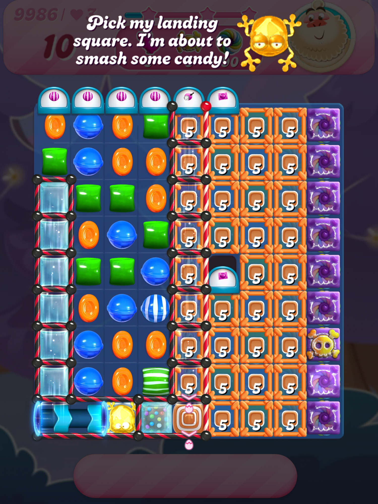
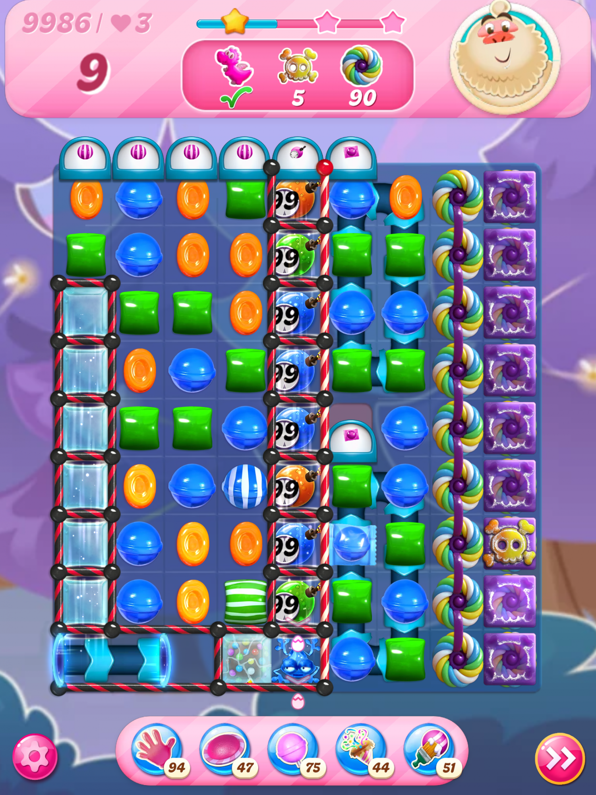
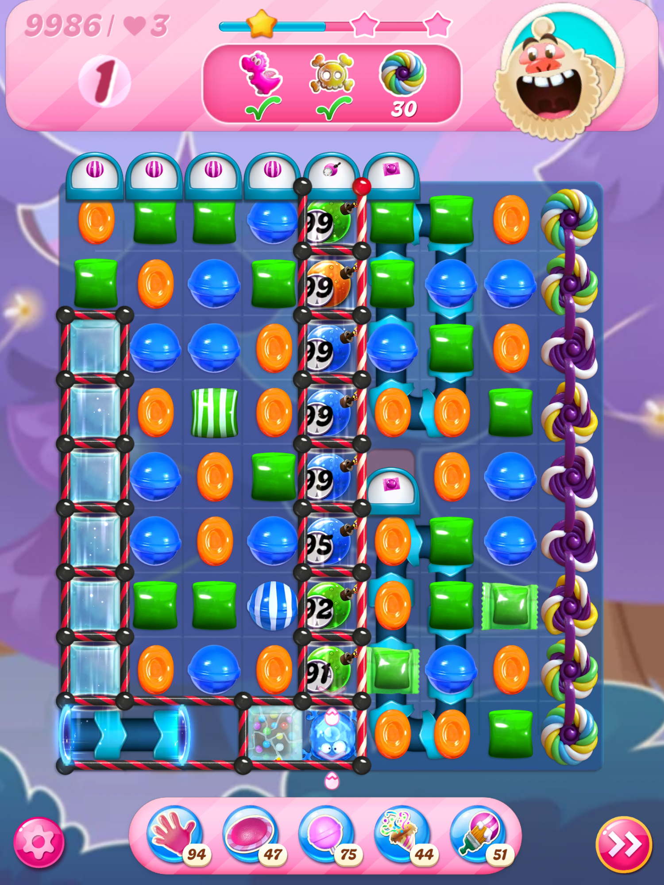

Introduction
Candy.io is a vibrant, slithering survival game set in a colorful candy-themed world. Unlike standard io games, it immerses players in a closed space filled with cute, brightly colored candy characters. The core appeal lies in its relaxing yet highly competitive atmosphere, where you control a slithering candy snake to eat smaller candies and grow in size. Players love it for its beautiful graphics, entertaining gameplay, and the ability to play solo or in team matches. It offers a perfect blend of casual fun and strategic competition, allowing you to test your skills against friends or global players while enjoying a visually sweet and engaging environment.
Getting Started

Starting your journey in Candy.io is straightforward. Simply open the game and choose to play solo or join a team match to enter the colorful candy world. Your primary objective is to collect scattered candies to increase your score and character size. You control your slithering candy using only the mouse; move your cursor to steer your character around the map. In the beginning, focus on safely gathering small candies in open areas to grow your size without risking collisions with larger opponents. As you grow, you can start attacking smaller candies or avoiding larger ones to protect your hard-earned position. Remember that the map is a closed space, so you must constantly navigate around other players. Keep an eye out for special candies that offer higher scores to accelerate your growth speed early in the match, establishing an early size advantage.
Basic Tips
To succeed in Candy.io, beginners should follow these essential tips. First, get familiar with the map areas to identify where candies spawn abundantly and where dangers lurk. Second, always prioritize collecting regular candies to steadily increase your size and score before engaging in risky fights. Third, seek out special candies that yield higher scores to boost your growth speed significantly. Fourth, find quiet zones with fewer players to safely farm candies without the threat of being attacked. Finally, avoid moving in a straight line; instead, use quick spins and erratic movements to dodge incoming opponents and protect your vulnerable tail. By mastering these basics and staying aware of your surroundings, you will safely build the size needed to dominate the colorful candy world. This balanced approach ensures steady progress while minimizing early eliminations.
Advanced Strategies

Experienced players can elevate their gameplay by employing advanced strategies. First, take advantage of corners and map obstacles to hide your approach, launching surprise attacks on distracted opponents. Second, use your increased size to trap smaller players by curling your slithering body around them, forcing them to collide with you and drop their candies for you to consume. Third, master the art of the bait-and-switch; pretend to be distracted to lure a larger, aggressive opponent into a tight corner where they can easily crash into the walls or obstacles. Fourth, manage your positioning in team matches by coordinating with allies to box in rival teams, securing high-value candy areas of the map. These tactical maneuvers will help you outsmart opponents, control the flow of the closed space, and maintain top rankings in highly competitive matches.
Pro Tips

To truly separate yourself from the pack in Candy.io, master these expert-level techniques. First, utilize micro-movements with your mouse cursor to make your slithering path unpredictable, making it nearly impossible for enemies to cut you off. Second, always keep your tail in motion; a stationary tail is an easy target for smaller players looking to steal your hard-earned size. Third, use the spin mechanics not just for evasion, but to intentionally cut off the escape routes of fleeing opponents, trapping them against the map boundaries. Finally, constantly scan the peripheral areas to predict the movement of massive players, allowing you to clear out before they arrive.
🎮 Controls & Mechanics Deep Dive
If you think Candy.io is just about pointing your mouse and eating, you’re going to get absolutely wrecked by the sweaty veterans. The movement physics in this game are surprisingly deep, and understanding exactly how your candy snake interacts with the environment is the difference between topping the leaderboard and getting sniped in the first ten seconds.
First off, let’s talk about momentum and turning radius. Your candy doesn’t pivot on a dime. When you change direction, there’s a slight delay and a wide turning arc, especially when you’re massive. If you’re a giant candy snake, you need to plan your turns way ahead of time. Trying to do a sharp 90-degree cut when you’re huge will just result in you crashing into your own tail or a wall. Conversely, when you’re small and nimble, your turning radius is incredibly tight, making you a nightmare to catch.
The collision mechanics are strictly head-to-body. Your actual "hitbox" is just the very front tip of your candy's head. If your head touches any part of another player's body, you explode into a shower of delicious, collectible candy. However, your own body acts as a solid physical barrier for others. This means you can use your tail to block pathways, trap smaller players, or even wall them off from escaping.
Then there’s the boost mechanic. By clicking or holding the boost button, you shoot forward at high speed. But here’s the catch: boosting constantly sheds your mass (length) as you travel. It leaves a trail of tiny candies behind you. Newbies will just hold the boost button down and watch their score melt away. Pros use it in micro-bursts to dodge, close a gap, or execute a quick fake-out. Managing your mass while boosting is a crucial resource management skill you need to master early on.
🎯 Game Modes Breakdown
Candy.io isn’t just one endless free-for-all; it actually offers a few distinct modes that completely change how you need to play. Knowing the rules and objectives of each mode is half the battle.
- Free-For-All (FFA): This is the classic, chaotic every-candy-for-themselves experience. With up to 20 players on the map, it’s a pure battle royale of survival. There are no teams, no alliances, and no mercy. The objective is simple: eat, grow, and survive. In FFA, map awareness is everything. You need to keep an eye on the minimap to avoid getting ambushed by a massive snake while you’re busy farming small candies.
- Team Mode: This is where the game gets incredibly tactical. You’re grouped into color-coded squads (usually 3v3 or 4v4). Your main objective is to get your team the highest combined score, but more importantly, you need to keep your team alive. Team mode introduces amazing synergy. If you’re the biggest snake on your team, your job is to be the "carry" and draw aggro, while your smaller teammates farm safely behind you and protect your blind spots. If a teammate gets taken out, you need to immediately sweep up their dropped candies to avenge them and reclaim your team's lost mass.
- Battle Royale / Shrinking Arena: In this high-tension mode, the playable area slowly shrinks over time, represented by a closing candy-storm boundary. If you get caught outside the safe zone, you start rapidly losing mass. This mode forces aggressive gameplay. You can’t just hide in a corner and farm; the shrinking map will eventually push you into the other players. The strategy here is to position yourself near the center early on, control the choke points as the map shrinks, and strike when others are forced into tight spaces.
🚀 Advanced Strategies & Pro Tips
Alright, you know the controls and you understand the modes. Now it’s time to stop playing checkers and start playing chess. Here are some advanced, pro-level tactics that will help you dominate the candy-coated arena.
The "Bait and Switch" (or The Fake-Out): This is the most reliable way to take down a player who is slightly bigger than you. When a bigger snake is chasing you, don't just run in a straight line. Wait until they are right on your tail and inevitably hit the boost button to catch you. The exact millisecond they boost, sharply cut your movement in the opposite direction. Because they are boosting, their turning radius becomes massive. They’ll fly right past you, exposing their side. Immediately cut into their body for the kill.
The "Coil" Trap: If you are significantly larger than your target, don't just chase them head-on. Instead, use your superior speed and size to circle around them. Start wrapping your body around their path in a spiral. Once you’ve completed a full loop, they are trapped inside your coil. They can’t escape without crossing your body, which means instant death for them. Just be careful not to accidentally cross your own tail while tightening the noose!
Edge Hugging vs. Center Control: A lot of players think hugging the outer walls of the arena is the safest play because it prevents you from getting flanked from behind. While true, it also traps you. If a bigger snake pushes you against the wall, you have nowhere to run. Pro players actually prefer center control. By staying in the middle, you have 360 degrees of escape routes. Use the walls only when you are specifically trying to execute a 180-degree trap against a pursuer.
Psychological Farming: When you see a massive amount of candies dropped from a recently eliminated giant snake, don't just dive in blindly. That candy pile is basically a giant glowing trap. Hover on the perimeter of the candy pile and watch the minimap. Let the greedy players dive in first. Once they are distracted and eating, strike them from behind. Patience pays off massively in the mid-game.
❓ Frequently Asked Questions
Is Candy.io completely free to play?
Yes, 100% free! It’s a browser-based .io game, which means there are no upfront costs, no subscriptions, and no mandatory purchases. You might see some optional cosmetic skins you can buy or unlock, but they don't give you any competitive advantage. It’s purely skill-based.
Can I play Candy.io on my phone or tablet?
Absolutely. The game is fully optimized for mobile browsers. However, the control scheme switches from mouse-following to a virtual joystick on the left side of your screen. It takes a little getting used to, and your thumb might get a bit cramped during intense matches, but it works surprisingly well. Make sure you play in landscape mode for the best field of view.
How do I play with my friends?
Playing with friends is super easy. When you’re in the main menu, look for the "Create Private Room" or "Party" option. You can generate a unique room link or code and send it to your buddies. Once they join, you can all queue up together for Team Mode or just cause chaos in a private FFA lobby.
My game is stuttering and lagging. How can I fix it?
Lag in .io games is usually tied to your browser or connection. First, try closing out of any other heavy tabs or applications running in the background. If you're on Wi-Fi, try switching to a wired ethernet connection if possible. You can also go into the game’s settings and lower the graphic quality, turn off particle effects, or reduce the render distance. Dropping the graphics from "High" to "Medium" usually fixes frame drops instantly without making the game look terrible.
What’s the fastest way to get a high score?
The biggest mistake new players make is rushing the early game. Don't try to hunt other players until you are at least in the top 50% of the lobby's size. Spend the first two minutes just peacefully farming the small ambient candies scattered around the map. Once you have a solid base size, start taking calculated risks. A patient player who farms safely for three minutes will almost always beat an aggressive player who dies trying to get an early kill.
Conclusion
Candy.io offers a delightful mix of colorful visuals, relaxing gameplay, and intense slithering competition. By mastering movement, utilizing map obstacles, and strategically growing your size, you can dominate the candy world. Whether playing solo or in team matches, the game provides endless entertainment and a great way to sharpen your strategic skills. Jump in, start collecting, and see how big you can grow!